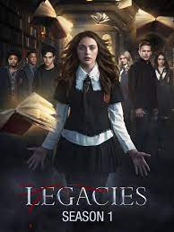

Legacies
Legacies is an American fantasy drama television series, created by Julie Plec,
See ProfileThe series is set in the fictional town of Mystic Falls, Virginia, a town charged with supernatural history. It follows the life of Elena Gilbert (Nina Dobrev), a teenage girl who has just lost both parents in a car accident, as she falls in love with a 162-year-old vampire named Stefan Salvatore (Paul Wesley). Their relationship becomes increasingly complicated as Stefan's mysterious older brother Damon Salvatore (Ian Somerhalder) returns, with a plan to bring back their past love Katherine Pierce (also played by Dobrev), a vampire who looks exactly like Elena. Although Damon initially harbors a grudge against his brother for forcing him to become a vampire, he later reconciles with Stefan and falls in love with Elena, creating a love triangle among the three. Both brothers attempt to protect Elena as they face various villains and threats to their town, including Katherine. The brothers' history and the town's mythology are revealed through flashbacks as the series goes on. Additional storylines revolve around the other inhabitants of the town, most notably Elena's younger brother Jeremy Gilbert (Steven R. McQueen) and aunt Jenna Sommers (Sara Canning), her best friends Bonnie Bennett (Kat Graham) and Caroline Forbes (Candice King), their mutual friends Matt Donovan (Zach Roerig) and Tyler Lockwood (Michael Trevino), Matt's older sister Vicki Donovan (Kayla Ewell), and their history teacher, vampire hunter Alaric Saltzman (Matthew Davis). The town's politics are orchestrated by descendants of the original founding families, all comprising a "Founders' Council." They guard the town mainly from vampires and other supernatural threats such as werewolves, witches, hybrids, and ghosts.
I LOVE this show!!! The first season can be a bit boring but that’s just because they’re setting up the world and the characters, so don’t judge it on the first few episodes and I promise you won’t be disappointed. During the series run you can see all the characters grow so much and I really appreciate that. Also the characters in general are amazing! There’s never a character that you truly hate (even the ones you’re supposed to!) and that leaves you conflicted throughout the show. They really did an amazing job of making each character have his/her own feel. The relationships between each characters feel like a one you find in real life and it never feels forced! They have an amazing story line that will keep you at the edge of your seat, and that will make you click on the next episode ( and the next). It has great plot twists that you won’t see coming! It has fun fights and great romantic content that really make you root for the characters and cry with them The cast is amazing! They really make this show come to life and I can’t think of anyone else playing them! They also have amazing chemistry with each other which in my opinion is what makes this show fantastic. This cast never disappoints you and does a really good job of keeping you interested. I really recommend this show to anyone who is interested in action, romance, and mystery.
Legacies is an American fantasy drama television series, created by Julie Plec,
See ProfileThe Vampire Diaries is an American supernatural-fantasy horror television series.[1] The series is based on a book series of the same name by L.J. Smith and was developed for television by Kevin Williamson and Julie Plec. The series ran from September 10, 2009 to March 10, 2017, on The CW.[2][3] The first season was released on both DVD and Blu-ray formats in the United States and Canada on August 31, 2010.[4] The Vampire Diaries follows the life of Elena Gilbert (Nina Dobrev) who lives in Mystic Falls, a fictional town heavily charged with supernatural history. She falls for a handsome century-old vampire named Stefan Salvatore (Paul Wesley). Their lives grow more and more complicated as Stefan's vicious older vampire brother Damon Salvatore (Ian Somerhalder) also returns to town with a vendetta against his brother and the descendants of the town's founders. However, Damon quickly becomes their greatest ally in their fight against evil. During the course of the series, 171 episodes of The Vampire Diaries aired over eight seasons.